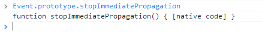
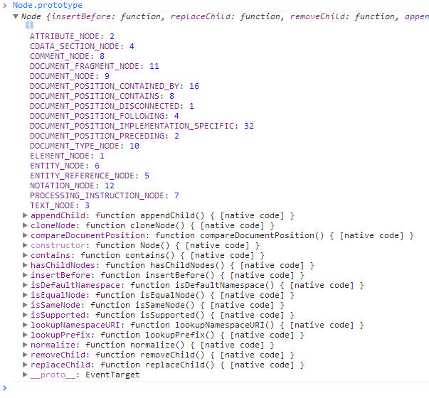
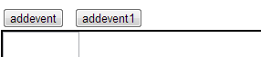
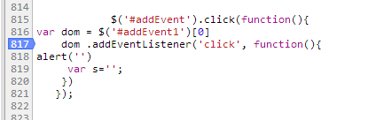
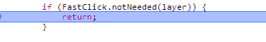

申明！！！最后发现判断有误，各位读读就好，正在研究中.....尼玛水太深了
前言
近期使用tap事件为老夫带来了这样那样的问题，其中一个问题是解决了点透还需要将原来一个个click变为tap，这样的话我们就抛弃了ie用户
当然可以做兼容，但是没人想动老代码的，于是今天拿出了fastclick这个东西，
这是最近第四次发文说tap的点透事件，我们一直对解决“点透”的蒙版耿耿于怀，于是今天老大提出了一个库fastclick，最后证明解决了我们的问题
而且click不必替换为tap了，于是我们老大就语重心长的对我说了一句，你们就误我吧，我邮件都发出去了......
于是我下午就在看fastclick这个库，看看是不是能解决我们的问题，于是我们开始吧
读fastclick源码
尼玛使用太简单了，直接一句：
FastClick.attach(document.body);
于是所有的click响应速度直接提升，刚刚的！什么input获取焦点的问题也解决了！！！尼玛如果真的可以的话，原来改页面的同事肯定会啃了我
一步步来，我们跟进去，入口就是attach方法：
1 FastClick.attach = function(layer) { 2 'use strict'; 3 return new FastClick(layer); 4 };
这个兄弟不过实例化了下代码，所以我们还要看我们的构造函数：
1 function FastClick(layer) { 2 'use strict'; 3 var oldOnClick, self = this; 4 this.trackingClick = false; 5 this.trackingClickStart = 0; 6 this.targetElement = null; 7 this.touchStartX = 0; 8 this.touchStartY = 0; 9 this.lastTouchIdentifier = 0; 10 this.touchBoundary = 10; 11 this.layer = layer; 12 if (!layer || !layer.nodeType) { 13 throw new TypeError('Layer must be a document node'); 14 } 15 this.onClick = function() { return FastClick.prototype.onClick.apply(self, arguments); }; 16 this.onMouse = function() { return FastClick.prototype.onMouse.apply(self, arguments); }; 17 this.onTouchStart = function() { return FastClick.prototype.onTouchStart.apply(self, arguments); }; 18 this.onTouchMove = function() { return FastClick.prototype.onTouchMove.apply(self, arguments); }; 19 this.onTouchEnd = function() { return FastClick.prototype.onTouchEnd.apply(self, arguments); }; 20 this.onTouchCancel = function() { return FastClick.prototype.onTouchCancel.apply(self, arguments); }; 21 if (FastClick.notNeeded(layer)) { 22 return; 23 } 24 if (this.deviceIsAndroid) { 25 layer.addEventListener('mouseover', this.onMouse, true); 26 layer.addEventListener('mousedown', this.onMouse, true); 27 layer.addEventListener('mouseup', this.onMouse, true); 28 } 29 layer.addEventListener('click', this.onClick, true); 30 layer.addEventListener('touchstart', this.onTouchStart, false); 31 layer.addEventListener('touchmove', this.onTouchMove, false); 32 layer.addEventListener('touchend', this.onTouchEnd, false); 33 layer.addEventListener('touchcancel', this.onTouchCancel, false); 34 35 if (!Event.prototype.stopImmediatePropagation) { 36 layer.removeEventListener = function(type, callback, capture) { 37 var rmv = Node.prototype.removeEventListener; 38 if (type === 'click') { 39 rmv.call(layer, type, callback.hijacked || callback, capture); 40 } else { 41 rmv.call(layer, type, callback, capture); 42 } 43 }; 44 45 layer.addEventListener = function(type, callback, capture) { 46 var adv = Node.prototype.addEventListener; 47 if (type === 'click') { 48 adv.call(layer, type, callback.hijacked || (callback.hijacked = function(event) { 49 if (!event.propagationStopped) { 50 callback(event); 51 } 52 }), capture); 53 } else { 54 adv.call(layer, type, callback, capture); 55 } 56 }; 57 } 58 if (typeof layer.onclick === 'function') { 59 oldOnClick = layer.onclick; 60 layer.addEventListener('click', function(event) { 61 oldOnClick(event); 62 }, false); 63 layer.onclick = null; 64 } 65 }
看看这段代码，上面很多属性干了什么事情我也不知道......于是忽略了
1 if (!layer || !layer.nodeType) { 2 throw new TypeError('Layer must be a document node'); 3 }
其中这里要注意，我们必须传入一个节点给构造函数，否则会出问题
然后这个家伙将一些基本的鼠标事件注册在自己的属性方法上了，具体是干神马的我们后面再说
在后面点有个notNeeded方法：
1 FastClick.notNeeded = function(layer) { 2 'use strict'; 3 var metaViewport; 4 if (typeof window.ontouchstart === 'undefined') { 5 return true; 6 } 7 if ((/Chrome\/[0-9]+/).test(navigator.userAgent)) { 8 if (FastClick.prototype.deviceIsAndroid) { 9 metaViewport = document.querySelector('meta[name=viewport]'); 10 if (metaViewport && metaViewport.content.indexOf('user-scalable=no') !== -1) { 11 return true; 12 } 13 } else { 14 return true; 15 } 16 } 17 if (layer.style.msTouchAction === 'none') { 18 return true; 19 } 20 return false; 21 };
这个方法用于判断是否需要用到fastclick，注释的意思不太明白，我们看看代码吧
首先一句：
1 if (typeof window.ontouchstart === 'undefined') { 2 return true; 3 }
如果不支持touchstart事件的话，返回true
PS：现在的只管感受就是fastclick应该也是以touch事件模拟的，但是其没有点透问题
后面还判断了android的一些问题，我这里就不关注了，意思应该就是支持touch才能支持吧，于是回到主干代码
主干代码中，我们看到，如果浏览器不支持touch事件或者其它问题就直接跳出了
然后里面有个deviceIsAndroid的属性，我们跟去看看（其实不用看也知道是判断是否是android设备）
FastClick.prototype.deviceIsAndroid = navigator.userAgent.indexOf('Android') > 0;
绑定事件
好了，这家伙开始绑定注册事件了，至此还未看出异样
1 if (this.deviceIsAndroid) { 2 layer.addEventListener('mouseover', this.onMouse, true); 3 layer.addEventListener('mousedown', this.onMouse, true); 4 layer.addEventListener('mouseup', this.onMouse, true); 5 } 6 layer.addEventListener('click', this.onClick, true); 7 layer.addEventListener('touchstart', this.onTouchStart, false); 8 layer.addEventListener('touchmove', this.onTouchMove, false); 9 layer.addEventListener('touchend', this.onTouchEnd, false); 10 layer.addEventListener('touchcancel', this.onTouchCancel, false);
具体的事件函数在前面被重写了，我们暂时不管他，继续往后面看先（话说，这家伙绑定的事件够多的）
stopImmediatePropagation
完了多了一个属性：
阻止当前事件的冒泡行为并且阻止当前事件所在元素上的所有相同类型事件的事件处理函数的继续执行.
如果某个元素有多个相同类型事件的事件监听函数,则当该类型的事件触发时,多个事件监听函数将按照顺序依次执行.如果某个监听函数执行了 event.stopImmediatePropagation()方法,则除了该事件的冒泡行为被阻止之外(event.stopPropagation方法的作用),该元素绑定的其余相同类型事件的监听函数的执行也将被阻止.
1 <html> 2 <head> 3 <style> 4 p { height: 30px; width: 150px; background-color: #ccf; } 5 div {height: 30px; width: 150px; background-color: #cfc; } 6 </style> 7 </head> 8 <body> 9 <div> 10 <p>paragraph</p> 11 </div> 12 <script> 13 document.querySelector("p").addEventListener("click", function(event) 14 { 15 alert("我是p元素上被绑定的第一个监听函数"); 16 }, false); 17 document.querySelector("p").addEventListener("click", function(event) 18 { 19 alert("我是p元素上被绑定的第二个监听函数"); 20 event.stopImmediatePropagation(); 21 //执行stopImmediatePropagation方法,阻止click事件冒泡,并且阻止p元素上绑定的其他click事件的事件监听函数的执行. 22 }, false); 23 document.querySelector("p").addEventListener("click", function(event) 24 { 25 alert("我是p元素上被绑定的第三个监听函数"); 26 //该监听函数排在上个函数后面,该函数不会被执行. 27 }, false); 28 document.querySelector("div").addEventListener("click", function(event) 29 { 30 alert("我是div元素,我是p元素的上层元素"); 31 //p元素的click事件没有向上冒泡,该函数不会被执行. 32 }, false); 33 </script> 34 </body> 35 </html>
1 if (!Event.prototype.stopImmediatePropagation) { 2 layer.removeEventListener = function(type, callback, capture) { 3 var rmv = Node.prototype.removeEventListener; 4 if (type === 'click') { 5 rmv.call(layer, type, callback.hijacked || callback, capture); 6 } else { 7 rmv.call(layer, type, callback, capture); 8 } 9 }; 10 11 layer.addEventListener = function(type, callback, capture) { 12 var adv = Node.prototype.addEventListener; 13 if (type === 'click') { 14 adv.call(layer, type, callback.hijacked || (callback.hijacked = function(event) { 15 if (!event.propagationStopped) { 16 callback(event); 17 } 18 }), capture); 19 } else { 20 adv.call(layer, type, callback, capture); 21 } 22 }; 23 }
然后这家伙重新定义了下注册与注销事件的方法，
我们先看注册事件，其中用到了Node的addEventListener，这个Node是个什么呢？
由此观之，Node是一个系统属性，代表我们的节点吧，所以这里重写了注销的事件
这里，我们发现，其实他只对click进行了特殊处理
1 adv.call(layer, type, callback.hijacked || (callback.hijacked = function(event) { 2 if (!event.propagationStopped) { 3 callback(event); 4 } 5 }), capture);
其中有个hijacked劫持是干神马的就暂时不知道了，估计是在中间是否改写的意思吧
然后这里重写写了下，hijacked估计是一个方法，就是为了阻止在一个dom上注册多次事件多次执行的情况而存在的吧
注销和注册差不多我们就不管了，到此我们其实重写了我们传入dom的注册注销事件了，好像很厉害的样子，意思以后这个dom调用click事件用的是我们的，当然这只是我暂时的判断，具体还要往下读，而且我觉得现在的判断不靠谱，于是我们继续吧
我们注销事件时候可以用addEventListener 或者 dom.onclick=function(){}，所以这里有了下面的代码：
1 if (typeof layer.onclick === 'function') { 2 oldOnClick = layer.onclick; 3 layer.addEventListener('click', function(event) { 4 oldOnClick(event); 5 }, false); 6 layer.onclick = null; 7 }
此处，他的主干流程居然就完了，意思是他所有的逻辑就在这里了，不论入口还是出口应该就是事件注册了，于是我们写个代码来看看
测试入口
1 <input type="button" id="addEvent" value="addevent"> 2 <input type="button" id="addEvent1" value="addevent1"> 3 4 $('#addEvent').click(function () { 5 var dom = $('#addEvent1')[0] 6 dom.addEventListener('click', function () { 7 alert('') 8 var s = ''; 9 }) 10 });
我们来这个断点看看我们点击后干了什么，我们现在点击按钮1会为按钮2注册事件：
但是很遗憾，我们在电脑上不能测试，所以增加了我们读代码的困难，在手机上测试后，发现按钮2响应很快，但是这里有点看不出问题
最后alert了一个!Event.prototype.stopImmediatePropagation发现手机和电脑都是false，所以我们上面搞的东西暂时无用
1 FastClick.prototype.onClick = function (event) { 2 'use strict'; 3 var permitted; 4 alert('终于尼玛进来了'); 5 if (this.trackingClick) { 6 this.targetElement = null; 7 this.trackingClick = false; 8 return true; 9 } 10 if (event.target.type === 'submit' && event.detail === 0) { 11 return true; 12 } 13 permitted = this.onMouse(event); 14 if (!permitted) { 15 this.targetElement = null; 16 } 17 return permitted; 18 };
然后我们终于进来了，现在我们需要知道什么是trackingClick 了
1 /** 2 * Whether a click is currently being tracked. 3 * @type boolean 4 */ 5 this.trackingClick = false;
我们最初这个属性是false，但是到这里就设置为true了，就直接退出了，说明绑定事件终止，算了这个我们暂时不关注，我们干点其它的，
因为，我觉得重点还是应该在touch事件上
PS：到这里，我们发现这个库应该不只是将click加快，而是所有的响应都加快了
我在各个事件部分log出来东西，发现有click的地方都只执行了touchstart与touchend，于是至此，我觉得我的观点成立
他使用touch事件模拟量click，于是我们就只跟进这一块就好：
1 FastClick.prototype.onTouchStart = function (event) { 2 'use strict'; 3 var targetElement, touch, selection; 4 log('touchstart'); 5 if (event.targetTouches.length > 1) { 6 return true; 7 } 8 targetElement = this.getTargetElementFromEventTarget(event.target); 9 touch = event.targetTouches[0]; 10 if (this.deviceIsIOS) { 11 selection = window.getSelection(); 12 if (selection.rangeCount && !selection.isCollapsed) { 13 return true; 14 } 15 if (!this.deviceIsIOS4) { 16 if (touch.identifier === this.lastTouchIdentifier) { 17 event.preventDefault(); 18 return false; 19 } 20 this.lastTouchIdentifier = touch.identifier; 21 this.updateScrollParent(targetElement); 22 } 23 } 24 this.trackingClick = true; 25 this.trackingClickStart = event.timeStamp; 26 this.targetElement = targetElement; 27 this.touchStartX = touch.pageX; 28 this.touchStartY = touch.pageY; 29 if ((event.timeStamp - this.lastClickTime) < 200) { 30 event.preventDefault(); 31 } 32 return true; 33 };
其中用到了一个方法：
1 FastClick.prototype.getTargetElementFromEventTarget = function (eventTarget) { 2 'use strict'; 3 if (eventTarget.nodeType === Node.TEXT_NODE) { 4 return eventTarget.parentNode; 5 } 6 return eventTarget; 7 };
他是获取我们当前touchstart的元素
然后将鼠标的信息记录了下来，他记录鼠标信息主要在后面touchend时候根据x、y判断是否为click
是ios情况下还搞了一些事情，我这里跳过去了
然后这里记录了一些事情就跳出去了，没有特别的事情，现在我们进入我们的出口touchend
1 FastClick.prototype.onTouchEnd = function (event) { 2 'use strict'; 3 var forElement, trackingClickStart, targetTagName, scrollParent, touch, targetElement = this.targetElement; 4 log('touchend'); 5 if (!this.trackingClick) { 6 return true; 7 } 8 if ((event.timeStamp - this.lastClickTime) < 200) { 9 this.cancelNextClick = true; 10 return true; 11 } 12 this.lastClickTime = event.timeStamp; 13 trackingClickStart = this.trackingClickStart; 14 this.trackingClick = false; 15 this.trackingClickStart = 0; 16 if (this.deviceIsIOSWithBadTarget) { 17 touch = event.changedTouches[0]; 18 targetElement = document.elementFromPoint(touch.pageX - window.pageXOffset, touch.pageY - window.pageYOffset) || targetElement; 19 targetElement.fastClickScrollParent = this.targetElement.fastClickScrollParent; 20 } 21 targetTagName = targetElement.tagName.toLowerCase(); 22 if (targetTagName === 'label') { 23 forElement = this.findControl(targetElement); 24 if (forElement) { 25 this.focus(targetElement); 26 if (this.deviceIsAndroid) { 27 return false; 28 } 29 targetElement = forElement; 30 } 31 } else if (this.needsFocus(targetElement)) { 32 if ((event.timeStamp - trackingClickStart) > 100 || (this.deviceIsIOS && window.top !== window && targetTagName === 'input')) { 33 this.targetElement = null; 34 return false; 35 } 36 this.focus(targetElement); 37 if (!this.deviceIsIOS4 || targetTagName !== 'select') { 38 this.targetElement = null; 39 event.preventDefault(); 40 } 41 return false; 42 } 43 if (this.deviceIsIOS && !this.deviceIsIOS4) { 44 scrollParent = targetElement.fastClickScrollParent; 45 if (scrollParent && scrollParent.fastClickLastScrollTop !== scrollParent.scrollTop) { 46 return true; 47 } 48 } 49 if (!this.needsClick(targetElement)) { 50 event.preventDefault(); 51 this.sendClick(targetElement, event); 52 } 53 return false; 54 };
这个家伙洋洋洒洒干了许多事情
这里纠正一个错误，他onclick那些东西现在也执行了......可能是我屏幕有变化（滑动）导致
1 if ((event.timeStamp - this.lastClickTime) < 200) { 2 this.cancelNextClick = true; 3 return true; 4 }
这个代码很关键，我们首次点击会执行下面的逻辑，如果连续点击就直接完蛋，下面的逻辑丫的不执行了......
这个不执行了，那么这个劳什子又干了什么事情呢？
事实上下面就没逻辑了，意思是如果确实点击过快，两次点击只会执行一次，这个阀值为200ms，这个暂时看来是没有问题的
好了，我们继续往下走，于是我意识到又到了一个关键点
因为我们用tap事件不能使input获得焦点，但是fastclick却能获得焦点，这里也许是一个关键，我们来看看几个与获取焦点有关的函数
1 FastClick.prototype.focus = function (targetElement) { 2 'use strict'; 3 var length; 4 if (this.deviceIsIOS && targetElement.setSelectionRange) { 5 length = targetElement.value.length; 6 targetElement.setSelectionRange(length, length); 7 } else { 8 targetElement.focus(); 9 } 10 };
setSelectionRange是我们的关键，也许他是这样获取焦点的......具体我还要下来测试，留待下次处理吧
然后下面如果时间间隔过长，代码就不认为操作的是同一dom结构了
最后迎来了本次的关键：sendClick，无论是touchend还是onMouse都会汇聚到这里
1 FastClick.prototype.sendClick = function (targetElement, event) { 2 'use strict'; 3 var clickEvent, touch; 4 // On some Android devices activeElement needs to be blurred otherwise the synthetic click will have no effect (#24) 5 if (document.activeElement && document.activeElement !== targetElement) { 6 document.activeElement.blur(); 7 } 8 touch = event.changedTouches[0]; 9 // Synthesise a click event, with an extra attribute so it can be tracked 10 clickEvent = document.createEvent('MouseEvents'); 11 clickEvent.initMouseEvent('click', true, true, window, 1, touch.screenX, touch.screenY, touch.clientX, touch.clientY, false, false, false, false, 0, null); 12 clickEvent.forwardedTouchEvent = true; 13 targetElement.dispatchEvent(clickEvent); 14 };
他创建了一个鼠标事件，然后dispatchEvent事件（这个与fireEvent类似）
1 //document上绑定自定义事件ondataavailable 2 document.addEventListener('ondataavailable', function (event) { 3 alert(event.eventType); 4 }, false); 5 var obj = document.getElementById("obj"); 6 //obj元素上绑定click事件 7 obj.addEventListener('click', function (event) { 8 alert(event.eventType); 9 }, false); 10 //调用document对象的 createEvent 方法得到一个event的对象实例。 11 var event = document.createEvent('HTMLEvents'); 12 // initEvent接受3个参数： 13 // 事件类型，是否冒泡，是否阻止浏览器的默认行为 14 event.initEvent("ondataavailable", true, true); 15 event.eventType = 'message'; 16 //触发document上绑定的自定义事件ondataavailable 17 document.dispatchEvent(event); 18 19 var event1 = document.createEvent('HTMLEvents'); 20 event1.initEvent("click", true, true); 21 event1.eventType = 'message'; 22 //触发obj元素上绑定click事件 23 document.getElementById("test").onclick = function () { 24 obj.dispatchEvent(event1); 25 };
至此，我们就知道了，我们为dom先绑定了鼠标事件，然后touchend时候触发了，而至于为什么本身注册的click未触发就要回到上面代码了
解决“点透”（成果）
有了这个思路，我们来试试我们抽象出来的代码：
1 <!DOCTYPE html PUBLIC "-//W3C//DTD XHTML 1.0 Transitional//EN" "http://www.w3.org/TR/xhtml1/DTD/xhtml1-transitional.dtd"> 2 <html xmlns="http://www.w3.org/1999/xhtml"> 3 <head> 4 <title></title> 5 <meta name="viewport" content="width=device-width, initial-scale=1, maximum-scale=1"> 6 <style> 7 #list { display: block; position: absolute; top: 100px; left: 10px; width: 200px; height: 100px; } 8 div { display: block; border: 1px solid black; height: 300px; width: 100%; } 9 #input { width: 80px; height: 200px; display: block; } 10 </style> 11 </head> 12 <body> 13 <div id="list" style="background: gray;"> 14 </div> 15 <div id="wrapper"> 16 <div id="d"> 17 <input type="text" id="input" /> 18 </div> 19 </div> 20 <script type="text/javascript"> 21 var el = null; 22 function getEvent(el, e, type) { 23 e = e.changedTouches[0]; 24 var event = document.createEvent('MouseEvents'); 25 event.initMouseEvent(type, true, true, window, 1, e.screenX, e.screenY, e.clientX, e.clientY, false, false, false, false, 0, null); 26 event.forwardedTouchEvent = true; 27 return event; 28 } 29 list.addEventListener('touchstart', function (e) { 30 var firstTouch = e.touches[0] 31 el = firstTouch.target; 32 t1 = e.timeStamp; 33 }) 34 list.addEventListener('touchend', function (e) { 35 e.preventDefault(); 36 var event = getEvent(el, e, 'click'); 37 el.dispatchEvent(event); 38 }) 39 var list = document.getElementById('list'); 40 list.addEventListener('click', function (e) { 41 list.style.display = 'none'; 42 setTimeout(function () { 43 list.style.display = ''; 44 }, 1000); 45 }) 46 </script> 47 </body> 48 </html>
这样的话，便不会点透了，这是因为zepto touch事件全部绑定值document，所以 e.preventDefault();无用
结果我们这里是直接在dom上，e.preventDefault();
便起了作用不会触发浏览器默认事件，所以也不存在点透问题了，至此点透事件告一段落......
帮助理解的图
代码在公司写的，回家后不知道图上哪里了，各位将就看吧





为什么zepto会点透/fastclick如何解决点透
我最开始就给老大说zepto处理tap事件不够好，搞了很多事情出来
因为他事件是绑定到document上，先touchstart然后touchend，根据touchstart的event参数判断该dom是否注册了tap事件，有就触发
于是问题来了，zepto的touchend这里有个event参数，我们event.preventDefault()，这里本来都是最上层了，这就代码压根没什么用
但是fastclick处理办法不可谓不巧妙，这个库直接在touchend的时候就触发了dom上的click事件而替换了本来的触发时间
意思是原来要350-400ms执行的代码突然就移到了50-100ms，然后这里虽然使用了touch事件但是touch事件是绑定到了具体dom而不是document上
所以e.preventDefault是有效的，我们可以阻止冒泡，也可以阻止浏览器默认事件，这个才是fastclick的精华部分，不可谓不高啊！！！
整个fastclick代码读来醍醐灌顶，今天收获很大，在此记录
后记
上面的说法有点问题，这修正一下：
首先，我们回到原来的zepto方案，看看他有什么问题：
- 因为js标准本不支持tap事件，所以zepto tap是touchstart与touchend模拟而出
- zepto在初始化时便给document绑定touch事件，在我们点击时根据event参数获得当前元素，并会保存点下和离开时候的鼠标位置
- 根据当前元素鼠标移动范围判断是否为类点击事件，如果是便触发已经注册好的tap事件
然后fastclick处理比较与zepto基本一致，但是又有所不同
- fastclick是将事件绑定到你传的元素（一般是document.body）
② 在touchstart和touchend后（会手动获取当前点击el），如果是类click事件便手动触发了dom元素的click事件
所以click事件在touchend便被触发，整个响应速度就起来了，触发实际与zepto tap一样
好了，为什么基本相同的代码，zepto会点透而fastclick不会呢？
原因是zepto的代码里面有个settimeout，而就算在这个代码里面执行e.preventDefault()也不会有用
这就是根本区别，因为settimeout会将优先级较低
有了定期器，当代码执行到setTimeout的时候， 就会把这个代码放到JS的引擎的最后面
而我们代码会马上检测到e.preventDefault，一旦加入settimeout，e.preventDefault便不会生效，这是zepto点透的根本原因
结语
虽然，这次走了很多弯路，但是最后终于解决了问题